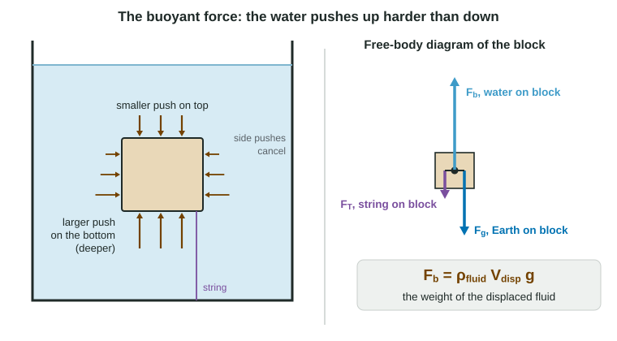

Lift a friend in a swimming pool and they feel light. Hang a stone from a spring scale and lower it into water, and the reading drops. The water is pushing up. This page explains where that push comes from, why it equals the weight of the water pushed aside, and how to use it with Newton's laws. The 2025 exam's last free-response question was on exactly this, so it is worth getting right.
Where the buoyant force comes from
Put a block under water. From the last topic, the pressure at any point in the water is P = P₀ + ρgh, so it grows with depth. The water pushes on every face of the block, perpendicular to that face:
- The pushes on the left and right faces are at matching depths, so they cancel.
- The push down on the top face comes from the pressure at the top's depth.
- The push up on the bottom face comes from the pressure at the bottom's depth, which is larger.
So the water's pushes add up to a net upward force. That is the buoyant force, Fb.

Now find its size. Let the block have height h and top and bottom area A. The pressure difference between bottom and top is ρfluidgh, so
Fb = (Pbottom − Ptop)A = ρfluidghA = ρfluidVdisplacedg
since hA is the block's volume, the volume of water it has pushed aside. Notice that the depth of the block cancels out: once an object is fully submerged, moving it deeper does not change its buoyant force.
Archimedes' principle
ρfluidVdisplaced is the mass of the fluid the object pushes aside, so ρfluidVdisplacedg is that fluid's weight. This is Archimedes' principle: the buoyant force on an object equals the weight of the fluid it displaces.
There is a neat way to see why it holds for any shape. Imagine a fluid parcel, a portion of the water itself, with exactly the stone's shape, sitting in the lake. The parcel is at rest, so by Newton's first law the surrounding water pushes up on it with a force equal to its weight. Replace the parcel with the stone. The surrounding water pushes on the stone's surface exactly as it pushed on the parcel's, so the stone feels the same upward force: the weight of a stone-shaped parcel of water.
Three things the buoyant force does not depend on: the object's density, the object's weight, and (once it is fully submerged) its depth. It depends on the fluid's density and the displaced volume.
Worked example 1. A 2.0 kg stone of volume 8.0 × 10⁻⁴ m³ hangs from a spring scale, fully under water. Find the buoyant force and the scale reading. Use g = 9.8 m/s².
Archimedes: Fb = ρwVg = (1000 kg/m³)(8.0 × 10⁻⁴ m³)(9.8 m/s²) = 7.84 N ≈ 7.8 N.
Newton's first law on the stone (at rest), up positive: FT + Fb − mg = 0.
FT = mg − Fb = (2.0 kg)(9.8 m/s²) − 7.84 N = 19.6 N − 7.84 N = 12 N. The scale reads 12 N.
Newton's laws with buoyancy
Treat the buoyant force as one more force on the free-body diagram. Draw it up, from the object, labeled with its agent ("Fb, water on block"), and keep the gravitational force as a separate arrow, down. Readers report students drawing only one of the two, or both in the same direction, or thinking gravity itself changes in water. It does not: mg is the same in air and in water.
| Situation | Forces | Result |
|---|---|---|
| Floating at rest | Fb = mg | fraction submerged = ρobject/ρfluid |
| Held under by a string | Fb = mg + FT | object less dense than fluid |
| Hanging from a scale, submerged | FT + Fb = mg | scale reads less than mg |
| Resting on the bottom | Fb + FN = mg | object denser than fluid |
| Released under water | ma = mg − Fb | sinks if ρobject > ρfluid |
Floating
A floating object sits still at the surface, so the net force on it is zero: the buoyant force exactly balances its weight. (When that balance holds for an object fully under the surface, so it hangs in the fluid without rising or sinking, the object has neutral buoyancy: its average density equals the fluid's, as for a fish or a submarine holding its depth.) The object sinks into the fluid only as far as it needs to displace its own weight of fluid:
ρfluidVsubg = ρobjectVg so Vsub/V = ρobject/ρfluid
Wood of density 600 kg/m³ floats with 60% of its volume under fresh water. An object denser than the fluid cannot displace enough fluid even when fully under, so it sinks. A steel ship floats because its hollow shape displaces a huge volume of water: its average density, steel plus air inside, is less than water's.
Worked example 2. A 0.50 kg block of density 2500 kg/m³ is released under water. Find its acceleration, neglecting drag. Use g = 9.8 m/s².
V = m/ρ = 0.50 kg / 2500 kg/m³ = 2.0 × 10⁻⁴ m³; Fb = (1000)(2.0 × 10⁻⁴)(9.8) N = 1.96 N.
Newton's second law, down positive: ma = mg − Fb = 4.90 N − 1.96 N = 2.94 N, so a = 2.94 N / 0.50 kg = 5.9 m/s² downward.
In general a = g(1 − ρfluid/ρobject): a denser fluid gives a smaller acceleration, because it gives a larger buoyant force.